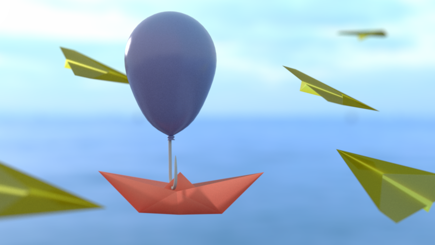
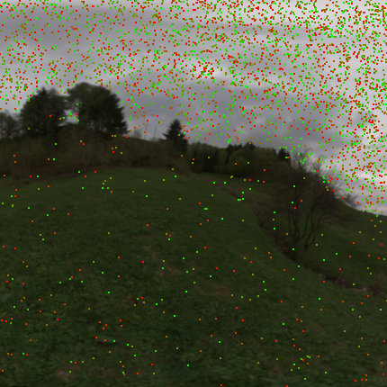

**Final Project Report**
Student name: Bastien Beuchat
Sciper number: 257117
Final render
============

Scene resources credits
----------------------
3D models :
* Balloon, created by BriMok
* Hook, created by timbazi
* Paper plane, created by raven0246
* Paper boat, created by Finulin
Environment map :
* Venice dawn, created by Greg Zaal
Texture :
* Metal texture
Motivation
==========
My idea was a dream about travelling and especially sailing.
For me sailing around the world is really something that makes me dreaming. I chose to also put aircrafts to symbolize what is in my mind the usual way of travelling nowadays.
To symbolize that, I chose to render a minimalistic scene but with realistic materials.
The main component is a paper boat. It is hooked in the air by a balloon.
The boat is litterally floating amid aircrafts.
The paper for the boat and the aircrafts is made by a diffuse transmitter.
It models the translucence of the paper. Indeed, a paper sheet in the air light by the sun will let the sunlight go through it.
I used the microfacet model made during the assignments to render the balloon. It give its smooth plastic aspect.
It is important that the ojects are really flying or floating in the sky. I used an environment map to achieve that. The environment is based on a photograph taken on waterfront. So we can see in the background the see as well and that connects to the sailing dream.
The main focus is the paper boat because the dream is not about taking an airplane. I added the depth of field to Nori to achieve that. It also give the depth aspect that you will expect from a photograph taken by a real camera.
The last element is the hook. I simply mapped a texture on the hook to give it its aspect.
Feature list
============
Feature
Standard point count
Adjusted point count
Textures
10
10
Depth of field
10
10
Simple extra BSDF : conductor diffuse transmitter
10
10
*Motion blur (Not implemented)*
20
20
Image based lighting
30
30
Total
80
80
Textures
=======
Description
-----------
Texturing is the common process to give a complicated texture to a mesh. Everything about texture is very well described in the chapter 10 of the PBRT book.
The textures open endless possiblitities to a renderer, that the main reason for which I decided to implement it even though I did not really use it in my final render.
Design choices
--------------
To add texture in Nori, I added a new kind of Nori object defined by the abstract class *Texture* defined in *texture.h*.
I integrated this new element in Nori. For this purpose, a class type named *ETexture* had to be added in *Object.h* and I adapted *parser.cpp* to parse this new kind of objects.
I decided that a Texture is a mesh parameter. I realized too late that it would be better to define the texture as a BSDF parameter. But this choice is sufficient for my usage of the texture.
Then, I implemented two kind of texture.
The first one is a constant texture.
The purpose was more to test and debug the architecture rather than adding it as a feature.
It is implemented in *constant_texture.cpp* and provide a simple class inheriting from Texture and having a simple parameter defining the color.
The second one is the most interesting one.
It is a texture based on an image and is implemented in *image_texture.cpp*.
The object has only one parameter.
It is a string containing the path to the Texture image.
The Texture image has to be an EXR image as I use the Bitmap class already already provided by Nori.
To map the Texture in the mesh I use the UV mapping technique. The sample method implement it. Given u and v component of a point on a mesh triangle the method return the color.
As a bitmap image is a discrete quantities whereas the uv components are continuous, I use the bilinear interpolation to compute the color.
I directly added a bilinear interpolation evaluation method to the *Bitmap* class as I also needed this technique for the environment map.
The following description shows how to render a mesh with an image texture :
``` xml
```
Validation
----------
My validation picture shows several textures applied to small plane. In this scene there is one light that placed behind the camera.
Textures credits (from left to right, and top to bottom) :
* Denim fabric, created by Rob Tuyel
* Wood, created by Rob Tuyel
* Tiles, created by Rob Tuyel
* Metal
* Bricks, created by Rob Tuyel
* Ground
The validation scene is available in */scenes/final_project/validation/textures/*.
Depth of field
==============
Description
-----------
I added the depth of field to Nori.
This feature brings a lot of realism.
It simulates lens as real camera are equipped with but with a simplistic model.
That enables to adjust the focus to one plane.
The other planes are blurred depending on their distance to the focused plane.
This illustrates the depth in the image as you can expect to see it in a photograph taken by a real camera.
I based my implementation on chapter 6.2.3 of the PBRT book
Design choices
--------------
To add the depth of field to Nori, I actually added a new camera equipped with a lens.
The lens is modeled by the *thin lens approximation*. That means the lens has a negligible thickness.
This new camera is implemented in *perspective_depth_of_field.cpp* and is defined by the class *PerspectiveDepthCamera* that inherits from *Camera*.
Most of the code is directly taken from *perspective.cpp*, the default Nori camera.
I added two float parameters to modelize the lens and they are used in the sampleRay method.
The two parameters are the following :
* m_lensRadius : a float storing the radius of a lens
* m_focalDistance : a float storing the focal distance of the lens
In the sampleRay method, the changes are not big. All what is needed to do is to change the direction of the ray according to the lens.
In a high level view, the sample ray algoritm becomes:
1. Sample the direction of the ray (same code as *perspective.cpp*)
2. Sample a point on a disk of the lens radius, that gives the origin of the ray
3. Define the point on the focal plane in the direction
4. Compute the ray direction, i.e.: the unit vector that define the direction between the points computed in step 1 and 2.
5. Convert the ray in the world coordinates system
In order to use this camera to render a scene, you need to change the xml description of the scene like this:
```
```
You will need to give the values corresponding to your scene and the image you want to render.
You will need to tweak the lensRadius and focalDistance accordingly.
The focal distance allows you to choose the focal plane i.e.: the plane that is focused.
The lens radius will have the following behavior : a biggest radius means a quicker increase of the blurriness of the other planes.
Validation
----------
To validate this feature, I rendrered the same image with 9 differents lens parameters.
This scene consists of a lot of bunny mesh on a plane.
The lighting is rudimentary, it consists of one sphere area light that is placed to the right of the camera.
The validation image with the perspective camera (original camera without depth of field) :
Here you can choose the combination of the two parameters.
Every change of parameters refresh the image below.
You can observe that the wanted effect is there.
The yellow bunny is the one that has the focus.
Focal distance :
Lens radius :
The validation scene is available in */scenes/final_project/validation/dof/*.
Diffuse transmitter
===================
Description
-----------
The diffuse transmitter is a main component of the final render as the aircrafts and the boat are made in paper.
I would like to thank the teaching team that suggested me this feature in the feedback of the project proposal.
I think it was a really clever suggestion because it really brings a lot of realism to my final render.
My implementation is similar to the one made in the mitsuba renderer (Diffuse transmitter of mitsuba).
For the theoretical concept, I read the section 2.6 of this document : Extending the Disney BRDF to a BSDF with Integrated Subsurface Scattering.
The concept is the following : when a ray of light intersect a diffuse transmitter, the light is scattered from the the other side of the surface.
During the scattering event the light lose its direction and so that give this diffuse aspect.
Design choices
--------------
The diffuse transmitter is implemented as a BSDF in the file *difftrans.cpp*. The class DiffuseTransmitter inherit from BSDF and implements the corresponding methods. It is almost similar as the normal diffuse bsdf, but the output direction is flipped to the other side of the surface.
I also sample the cosine hemisphere in order to do that but the sign of the z component is changed to point to the other side of the surface.
The diffuse object has only one parameter named transmittance that captures the diffused color. This parameter is very similar to the albedo of *diffuse.cpp*.
To apply this BSDF to a mesh in Nori, the following xml code has to be added to the mesh in the scene description file :
```
```
Validation
----------
The first validation picture shows a simple plane that is a diffuse transmitter with a red transmittance.
It is just in front of a light source.
We can see that the the light go through the plane and is diffused.
The second validation picture shows exactly the same plane, but the the light source is moved (but it is still behind the plane).
The third validation picture demonstrates that we can change the color with the transmittance parameter. Here again the light source is placed behind the planes.
The fourth validation picture demonstrates what it looks like when an object is put behind a diffuse transmitter.
In this case, I just put a bunny mesh behind each plane.
The validation scenes are available in */scenes/final_project/validation/difftrans/*.
Image based lighting
====================
Description
-----------
Image based lighting allows to add a lot of realism to a scene.
In my case I could render my objects as they were floating in a real environment.
Once again, I based my implementation on the explanantions of the PBRT book.
There is two separated parts in the feature :
1. The sampling process of an environment image (hierarchical sampling)
2. The rendering with an environment map
The first part is based on the instruction available for the hacker points of the third assignment of this course.
The second part is fully based on the explanations found in PBRT.
Design choices
--------------
I added the *LightProbe* class implemented in *lightprobe.[h|cpp]*.
This class inherit from *Emitter* and represent the environment light.
It has one String parameter that stores the path to the image.
The image has to be an EXR image as it is then loaded in the *Bitmap* Nori class.
I also embedded another class in LightProbe named LuminanceQuadTree. This class manages the sampling process.
This class represents a quadtree with the root representing the full image. Each node represents a patch of the image.
Each patch corresponding to a quarter of the patch stored by its parent.
The leafs of the tree are single pixels.
Each node has a probability proportional to the luminance being present in the patch.
The LuminanceQuadtree provide a method sample that go through the entire tree from the root to a leaf and at each level a children node is randomly chosen taking into account the probability of each direct children.
I updated the WarpTest in order to test the sampling process with the quadtree construction.
For this purpose, I added a new panel to test this sampling strategy.
The lightprobe class implements all methods defined in *Emitter* except the method getRadiance() that do not make any sense.
We can see the environment map as a surrounding sphere of the scene.
The sample method directly call the sample method of the internal LuminanceQuadTree to get a pixel. Then, it converts the coordinates of the pixel to the ray direction and return the color of the pixel.
The pdf is simply comuputed with the luminance of the pixel divided by the total luminance of the image.
The eval method simply converts a direction of ray to a pixel.
Each times a color is returned, there is a bilinear interpolation computed because the bitmap image is discrete.
I added a parameter to the scene named m_envEmitter that store the environment emitter.
I also updated the mis integrator, when no mesh are intersected the environment map is evaluated.
To use an environment map, the scene description has to contain :
```
```
Validation
----------
To validate the correctness of the hierarchical sampling.
I created a grid image with three levels of luminance.
I used it as input of the warptest.
I then used an image editor tool to put the samples on the image.
Here, the input image is much more realistic.
And we can see that there is much more samples in the brighter region, in the sky for example.
That exactly what is needed to have for hierarchical sampling as more light has to be sampled from the area with more luminance.

The input images are available in */scenes/final_project/validation/envmap/sampling*.
Now, let's render a simple image with an environment map.
This validation scene is available in */scenes/final_project/validation/envmap/env_light*.
Feedback
========
The final project is challenging and it was even more challenging in the context of this year (COVID-19).
But in this course the effort pay off with good rendering.
This aspect really raised my motivation.
To build his own renderer is so great. The nori skeleton is really simple so at the end, we understand really each step of the rendering. This in-depth aspect of the course is well done.
Despite the fact that I did not implement all the features. I am glad with my results. I think I was a little bit too overloaded to do more, so it is not a personal defeat.
I want to thank the entire teaching team that just do an awesome job.
The course is very well organized and is built to be motivating. I would recommend to any one that is looking for a challenging project and is interested in the field of computer graphics.